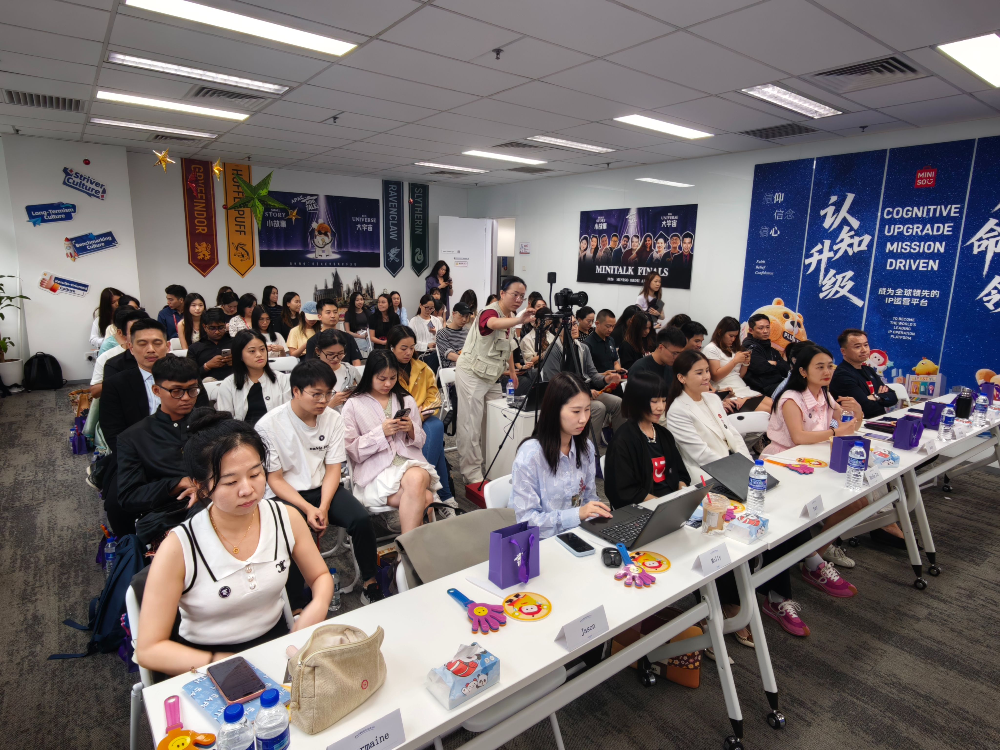
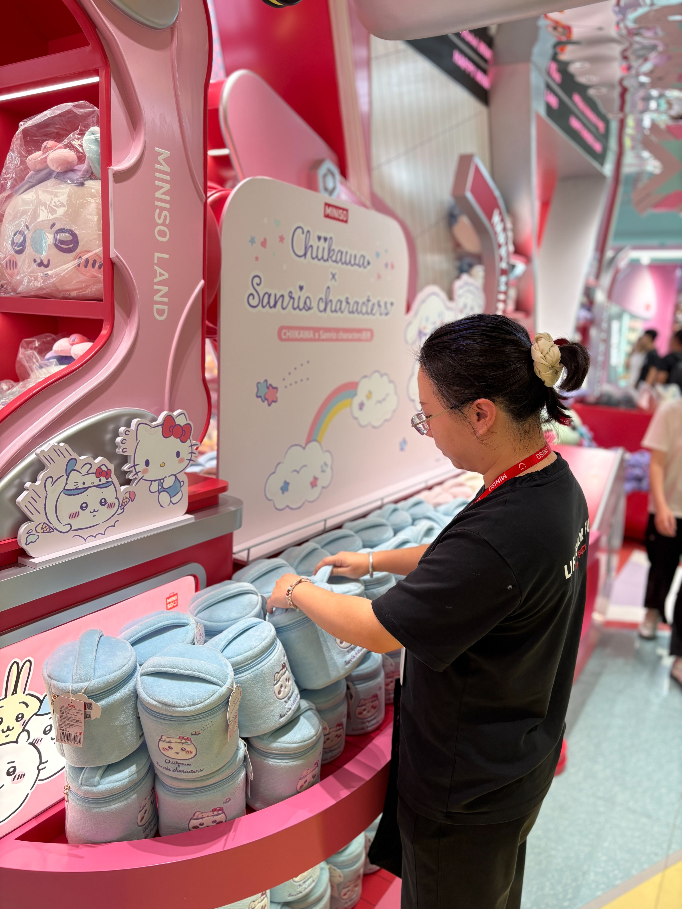
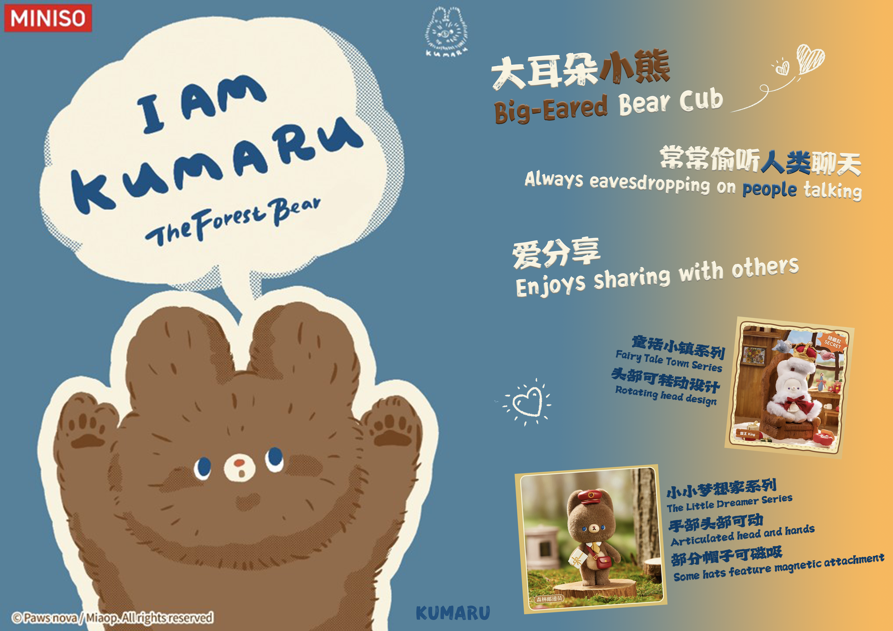
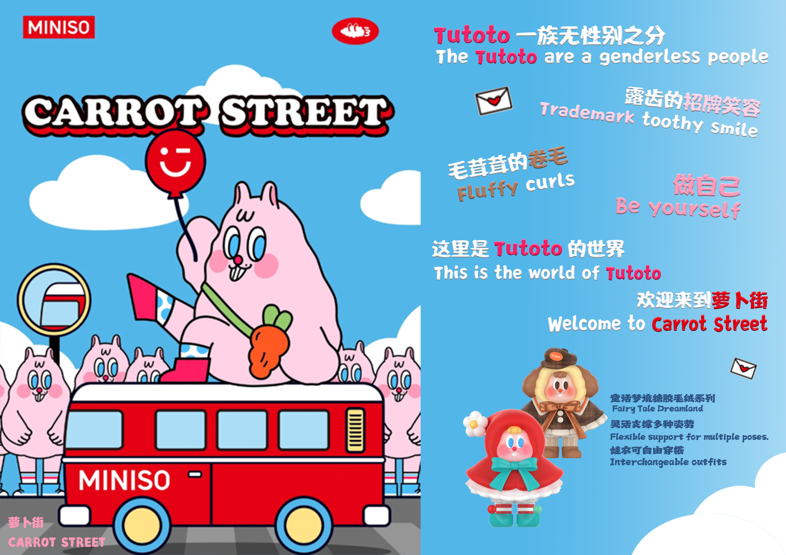

蔡婉雯 WANWEN CAI
AIGC Video Director / Editor · Brand & Product Marketing Content
AIGC video director with a film-school foundation and brand-content experience across China and the US.
Film-trained, AIGC-native — turning brand ideas into production-ready visual content, cutting a single video from 15 days to 24 hours.
核心优势
影视科班 × AIGC全流程创作
电影与电视制作（艺术硕士），GPA 3.9/4.0，熟练运用 Seedream、Seedance、可灵、剪映AI 等工具，将AI视频生成与专业剪辑技能深度结合，独立完成从概念到成片的全链路交付。
商业视频广告独立交付能力
从一张产品图到可投放广告，独立完成AI生成、剪辑、配乐、字幕全流程；为游戏、电商、快消品牌提供AIGC视频素材，大幅降低制作成本与周期。
内容判断与圈层洞察
从0到1搭建双平台万粉账号，单条播放超50万；深度理解二次元社群与二创文化，能将IP特性转化为高传播性视觉内容。
国际化视野与跨文化生产
托福101分，拥有美国影视公司与CCTV经验，熟悉国内外内容生产标准，能独立完成面向海外市场的视频策划与制作。
AIGC视频创作
《云开》· AIGC剧情片概念先导
原创剧本的AIGC叙事影像实验，以 Seedream 生成角色与场景参考图、Seedance 2.0 生成全片画面。从世界建立、人物设定、分镜设计到画面生成、视听包装全流程独立完成，探索AI参与剧情片影像表达的可能边界。
《穿越火线手游》主题PV · 30秒 / 60秒双版本
《穿越火线手游》CG 测试项目命题创作。独立完成导演创意阐述、分镜脚本、AI角色设定、提示词工程、AI视频生成、后期剪辑与音效设计全流程。以"枪战、御姐、双形态、听觉超能力"为核心关键词，构建"秘密交易—识破阴谋—反杀突围"的完整叙事。
以 Seedream 生成角色四视图与分镜图，经 Seedance 2.0 完成镜头生成与微调，最后用剪映AI 做音效、音乐与补帧，在有限资源下完成从概念到成片的完整制作。
华大基因 · 宠物基因检测AIGC科普片
面向养宠人群的通俗科普，独立撰写脚本并全链路全案制作，成片获得公司高度认可。
以 Seedream 生成人物形象参考图，经 Seedance 2.5 生成视频素材，最后使用剪映完成剪辑包装与合成。
mewaii 黑猫毛绒玩具 · 亚马逊广告
合作方 StarPony 仅提供产品静态图，独立完成AI视频生成、剪辑合成、AI配乐与字幕包装，输出可投放亚马逊的商业广告。
无穷卤蛋 × 蛋小萌 · 「上班搭子」创意短片
面向18-30岁年轻人群，从用户洞察到IP形象设计、AI生图、图生视频、后期包装全流程AIGC赋能，15秒短视频。
AIGC 生产工作流
从需求到 4K 成片的标准化管线，已在真实项目跑通并沉淀为团队 SOP。核心原则：先锁定不变的（结构、主体、风格），再生成变化的（动作、场景、镜头）；能用局部修改解决的，绝不整段重生成。
Seedream
用 3D 模型的正视、侧视、45 度、背视四张正交截图，加一张统一参考主图，把产品真实结构钉死。AI 不知道底盘几个轮子、机械臂几段关节——这一步不解决，后面全是变形。
Seedance 2.0 / 2.5
全能参考模式，一次最多 5 张参考图。逐镜头粘贴六段结构提示词，主体描述块每个镜头原样复用；上一镜尾帧接下一镜首帧，单镜头 3–5 秒、16:9、1080P，每次出 3–5 条候选只取一条。
剪映
按分镜顺序粗剪掐头去尾，音效精准卡在动作起点（轮子滚动、伺服电机、夹爪闭合），配乐压在音效之下 6–10dB，全片过画质修复后导出 3840×2160。
需求拆解
需求表填满，一句话创作简报确认
资产准备
3D 四视图、场景、人物、统一主图
分镜脚本
镜号、时长、景别、运镜先落定
提示词
六段结构，主体块逐镜复用不改写
生成镜头
全能参考，3–5 条候选取其一
校验返工
结构、外观、构图三级返工决策
剪映成片
音效卡点、画质修复至 4K
落版交付
效果确认后加落版，规范命名归档
工具负责提效，判断与校验始终由人完成：脚本初稿不直接采用、行业资料关键事实人工核验、人物对白按出镜人语言习惯重写。


工作经历
天机智能 · 产品影像
任职天机智能市场部AIGC视频创意编导期间，负责具身智能产品（GENTO / Luna）的视觉内容创作。AIGC 线以 Seedream 生成参考资产、Seedance 生成镜头素材，产出产品概念影像；实拍线负责展会现场影像与产品亮相片的策划、拍摄与剪辑，并承接中国日报受托拍摄素材的后期制作，成片经审核后在其官方渠道发布。
APEC 2026 · 中国日报现场报道｜后期制作
APEC 会议期间，天机智能委托中国日报完成现场拍摄，素材交由我方后期。独立完成剪辑、调色、包装与 4K 成片输出，经中国日报四轮审核后在其视频号正式发布。
APEC 2026 · Gento Luna 配送纪实
Gento.ai 子品牌号发布，现场实拍素材剪辑，统一片头规范与节奏。
CoRL 2026 · 21 自由度灵巧手首秀
TIANJI 主品牌号发布，机器人学习顶会 CoRL 现场影像，记录自研灵巧手在学术会议上的首次亮相。
GENTO Luna · AIGC 产品概念影像
以 3D 模型四视图正交投影为结构锚点的产品概念片，测试多镜头生成下的产品结构一致性。
前台可见互动数据（赞/转/藏），不含播放与完播。
天机智能 · 自研灵巧手
纯实拍产品亮相视频，独立完成策划、拍摄与剪辑包装的全案服务，以克制的工业影像语言呈现灵巧手的结构精度与动作质感。
名创优品 · 品牌视觉与企业文化
任职名创优品海外事业二部视频编导期间，深度参与企业文化建设与品牌视觉输出。从人物专访的选题策划、脚本撰写、现场拍摄到后期剪辑全流程独立完成；统筹季度大会、集团活动等高层会议的视觉内容制作；完成从0到1搭建内部传播平台、将业务故事转化为有感染力的品牌叙事。
加拿大区 · 标杆人物 ①
从选题策划到剪辑包装全流程独立制作。
澳大利亚区 · 标杆人物 ②
深入业务一线挖掘人物故事。
马来区 · 标杆人物 ③
三期标杆专访，支撑文化荣誉体系。
MNI TALK 决赛快剪回顾
独立负责现场拍摄与后期快剪剪辑。
海外二部上半年大事件回顾
跨部门资源整合，在高层大会现场播放。

大型活动视觉记录与高层演讲视频
参与多季度集团大会与价值观大会，从视觉记录到主视觉KV设计全流程把控。

正佳广场MINISO LAND潮玩零售业态洞察
驻店调研一周，分析IP驱动营收结构与主题店运营体系。


期待与您合作
蔡婉雯 Wanwen Cai
电话 / Tel：158 1166 2058
邮箱 / Email：wanwencai2026@163.com
现居 / Based in：广东 · 深圳 Shenzhen
以叙事赋能品牌
用内容连接人心